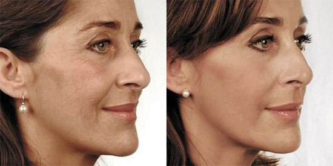
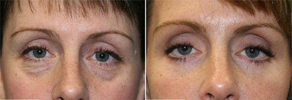
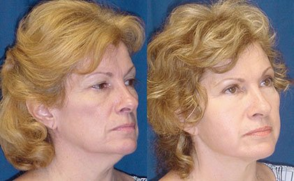
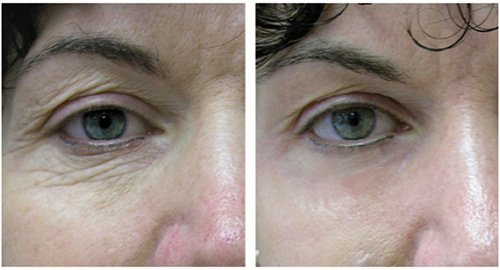

Οι αγορές της εβδομάδας: Zara, Mango, H&M και Massimo Dutti.
ΟΜΟΡΦΙΑ
Η αναζωογόνηση χωρίς μπότοξ είναι εφικτή!
Η νικήτρια του διαγωνισμού Αληθινές ιστορίες: πώς θα γίνεις όμορφη.
Γεια σας αγαπητές μου αναγνώστριες, θα ήθελα να μοιραστώ μαζί σας την ιστορία μου, για το πώς μπορείς να ψάχνεις την ομορφιά πολύ πολύ μακριά και τελικά να την βρίσκεις μέσα στο σπίτι .
 Τα αποτελέσματα μπορεί να διαφέρουν ανάλογα με τα
ατομικά χαρακτηριστικά του κάθε σώματος.
Ας γνωριστούμε πρώτα. Ονομάζομαι Μελίνα Σιδέρη, είμαι 47 ετών και ζω στην Αθήνα.
Αυτή είναι η ιστορία μου.
Μια μέρα ξύπνησα, κοίταξα τον εαυτό μου στον καθρέφτη και ξέσπασα σε κλάματα. Βαθιές ρυτίδες στο μέτωπό μου, πτυχώσεις γύρω από το στόμα και πανάδες στο δέρμα. Ένιωσα να χάνω τη γη κάτω από τα πόδια μου. Για κάποιο λόγο ξαφνικά θυμήθηκα την ιστορία μιας γυναίκας, που κατάφερε να αναζωογονήσει το πρόσωπό της σε σπα στην Τυνησία. Σε αυτή την πρώην αποικία της Γαλλίας, υπάρχουν πολλές έμπειρες Γαλλίδες αισθητικοί, που χρησιμοποιούν γαλλικά προϊόντα. Είναι το ίδιο καλά όπως στη Γαλλία, όμως οι τιμές είναι δύο με τρεις φορές χαμηλότερες. Συνεπώς, ο σπα τουρισμός στην Τυνησία αποδείχθηκε πολύ δημοφιλής παγκοσμίως.
"Πιστεύω, ότι αξίζω να είμαι όμορφη, έτσι δεν είναι!" Σκεφτόμουν κι άρχισα να μαθαίνω πληροφορίες για ένα ταξίδι στην Τυνησία. Στο πρώτο κιόλας ταξιδιωτικό πρακτορείο, μου πρόσφεραν ένα ταξίδι στην Τυνησία με 50% έκπτωση! Εν συντομία, δύο μέρες αργότερα βρισκόμουν στο θέρετρο Χαμαμέτ, σε ένα από τα μεγαλύτερα κέντρα σπα. Οι τοπικοί επαγγελματίες άρχισαν αμέσως να περιποιούνται το πρόσωπο και το σώμα μου. Δεν θέλω να πάρω πολύ από το χρόνο σας, λέγοντας τι είδους μασάζ έκανα κλπ, καθώς είναι και εκτός θέματος. Θα σας πω πώς περιποιήθηκαν το πρόσωπό μου.
Στην αρχή, έβγαλαν μια φωτογραφία το πρόσωπό μου, ώστε να μπορώ να δω τη διαφορά μετά. Μια πολυτελής πολυθρόνα με περίμενε. Απλά κάθεσαι και απολαμβάνεις. Ακούγεται απαλή μουσική, ο αέρας μυρίζει ένα ευχάριστο άρωμα και η γυναίκα κάνει μασάζ στο πρόσωπό σου με μια αρωματική ορός . Η όλη διαδικασία διαρκεί 15-20 λεπτά. Στο τέλος, άλλη μια φωτογραφία. Ορίστε, μπορείτε να δείτε το αποτέλεσμα.
Σακούλες κάτω από τα μάτια, ρυτίδες, και πτυχώσεις εξαφανίστηκαν! Και μαζί τους και 15 χρόνια από την εμφάνισή μου! Ήμουν σοκαρισμένη και ενθουσιασμένη! Η αισθητικός μου, που έχει χρόνια πρακτικής, μου χαμογελούσε όμορφα. Θυμάμαι το όνομα της ορός, προσώπου, που ήταν τελικά τόσο αποτελεσματική. Ήταν η ορός .
Με μεγάλη αυτοπεποίθηση, γύρισα πίσω στην Ελλάδα και όλες μου οι φίλες άρχισαν να τρελαίνονται με την εμφάνισή μου. Κυριολεκτικά με βομβάρδισαν με ερωτήσεις! Τους είπα τα πάντα με ειλικρίνεια, αλλά βαθιά μέσα μου ένιωσα... λυπημένη. Μέσα στον ενθουσιασμό για το νέο μου πρόσωπο, ξαφνικά αντίκρυσα τη λυπημένη ματιά της μητέρας μου. Τα κατάλαβα όλα αμέσως. Μια γυναίκα είναι πάντοτε γυναίκα, ανεξάρτητα από την ηλικία της. Σε κάθε ηλικία, θέλει να είναι όμορφη. Αλλά να στείλεις μια 71χρονη γυναίκα μόνη στην Τυνησία δεν ήταν σωστή επιλογή. Ζήτησα αυτή την ορός στα καταστήματα, αλλά κανείς δεν είχε ακούσει γι' αυτή...
Τελικά, φάνηκε, ότι αυτές οι ορός μπορούν να παραγγελθούν κι εδώ.
Πέρασε μισός χρόνος. Ξαφνικά έγινε ένα θαύμα! Εκεί που σέρφαρα στο Διαδίκτυο, έπεσα πάνω σε ένα οικείο όνομα - ορός ! Διάβασα και όλα ταίριαξαν! Η συσκευασία δεν ήταν ίδια βέβαια, σαν αυτή που είδα στην Τυνησία. Και η τιμή ήταν πολύ οικονομικότερη. Ίσως στην Τυνησία χρεώνουν τόσα για ολόκληρη την υπηρεσία. Εν συντομία, είχα αμφιβολίες, αλλά έκανα την παραγγελία μου! Γιατί ήξερα πώς έμοιαζε και τι αποτέλεσμα είχε! Και αν αυτή τελικά ήταν η πρωτότυπος ορός , τότε είμαι πολύ τυχερή!
Το πακέτο ήρθε μέσα σε 5 ημέρες. Πλήρωσα για το πακέτο με αντικαταβολή κατά την παράδοση. Άρχισα το πρόγραμμα μαζί με τη μαμά μου. Ήξερα ακριβώς τι να κάνω. Φυσικά, δεν ήταν η ίδια ατμόσφαιρα, με την άνετη πολυθρόνα, τη μουσική και την αρωματοθεραπεία. Αλλά η ορός είχε αποτέλεσμα έτσι κι αλλιώς. μετά από ένα μήνα χρήσης του ορού , η μητέρα μου και εγώ φαινόμαστε 5-7 χρόνια νεότεροι!
Να τα αποτελέσματα της ορόςς:
Τα αποτελέσματα μπορεί να διαφέρουν ανάλογα με τα
ατομικά χαρακτηριστικά του κάθε σώματος.
Αμέσως παράγγειλα 6 επιπλέον σωληνάρια, για τη μαμά μου και μια φίλη. Σίγουρα θα έχουν αποτέλεσμα, δεν έχω ξαναδεί κάτι καλύτερο για την επιδερμίδα του προσώπου. Το αποτέλεσμα ήταν όντως άμεσο. Υπέροχα!
Αυτή είναι η ιστορία μου. Ελπίζω, ότι η εμπειρία μου θα αποδειχθεί ωφέλιμη για πολλές. Μια γυναίκα πρέπει να είναι όμορφη σε κάθε ηλικία!
15 σχόλια
Είναι 71 δεν μπορώ να το πιστέψω! Παράγγειλα την ορός. Έχετε δει τη σύνθεσή της στην σελίδα ; Είναι εξαιρετική!
H ορός είναι φανταστική! Έχει αποκτήσει πολλές θαυμάστριες τον τελευταίο χρόνο.
Βρήκαν τελικά κάτι που έχει στ' αλήθεια αποτέλεσμα; Έχω βαρεθεί να ξοδεύω λεφτά για άχρηστα προϊόντα. Αν έχει όντως αποτέλεσμα, θα το παραγγείλω.
Συμφωνώ απόλυτα! Πρόκειται για ένα ισχυρό προϊόν αναζωογόνησης! Δεν μένει ούτε ίχνος από τις μικρές ρυτίδες. Παράγγειλα σε αυτή τη σελίδα , όλα είναι ασφαλή.
Απαλλάχτηκα εντελώς από τις ρυτίδες μετά από 3 κύκλους φροντίδας, ακόμα και οι βαθύτερες εξαφανίστηκαν! Χαίρομαι που βρήκα αυτό το άρθρο, ευχαριστώ. Τα αποτελέσματα μπορεί να διαφέρουν ανάλογα με τα ατομικά χαρακτηριστικά του κάθε σώματος.
Τα αποτελέσματα μπορεί να διαφέρουν ανάλογα με τα ατομικά χαρακτηριστικά του κάθε σώματος.
Τέλεια! Τυχαία βρήκα κι εγώ αυτή την ορός , δεν έψαχνα για κάτι. Πιστεύω ότι πάντα θα πρέπει να μοιραζόμαστε με τους άλλους τέτοια πράγματα!
Πανέμορφη γυναίκα! Εγώ φαίνομαι χειρότερη στα 30 μου :( Το αποφάσισα, θα πάρω και εγώ την ορός .
Είμαι σίγουρη ότι όλες μας στην Ελλάδα θα μάθουμε πολύ σύντομα περί τίνος πρόκειται. Δεν θα μείνει τίποτα μετά, σκέφτομαι να παραγγείλω τώρα να προλάβω, ποιος ξέρει τι γίνεται...
Κορίτσια, το ξέρατε ότι η ορός όχι μόνο αφαιρεί τις ρυτίδες αλλά μειώνει και το πρήξιμο! Είχα πολύ έντονους μαύρους κύκλους κάτω από τα μάτια μου, αλλά τώρα έχουν εξαφανιστεί. Είμαι τόσο χαρούμενη!  Τα αποτελέσματα μπορεί να διαφέρουν ανάλογα με τα ατομικά χαρακτηριστικά του κάθε σώματος.
Το αποτέλεσμα είναι αρκετά ορατό! Τέλειο! Σας ευχαριστώ για τα σχόλια!
Άκουσα κάπου για αυτή την ορός αλλά δεν είχα ιδέα από πού να την παραγγείλω. Ευχαριστώ για το λινκ!
Έχω ήδη παραγγείλει ! Ανυπομονώ!!
Ο άνδρας μου το αγόρασε για τα γενέθλιά μου! Είπε ότι θα έπρεπε να είμαι η ομορφότερη! Και μαντέψτε! Τα λόγια του έγιναν πραγματικότητα :)  Τα αποτελέσματα μπορεί να διαφέρουν ανάλογα με τα ατομικά χαρακτηριστικά του κάθε σώματος.
Αγόρασα την ορός και μου άρεσε πολύ! Τη χρησιμοποιούσα για δύο μήνες. Είναι εξαιρετική ορός αναζωογόνησης για το πρόσωπο. Δείτε και το δικό μου αποτέλεσμα  Τα αποτελέσματα μπορεί να διαφέρουν ανάλογα με τα ατομικά χαρακτηριστικά του κάθε σώματος.